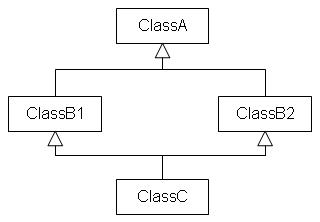

|
多重繼承時，會有一種模擬兩可的情況，就是當兩個類別都繼承同一個基底類別，而這兩個類別又同時被另一個類別，以平行多重繼承的方式同時繼承，例如下面的
示意圖：  在上圖中，C類別將會擁有兩個A類別的複本，一個來自B1所繼承下來的，一個來自B2所繼承下來的，那麼C類別到底要用B1所繼承下來的？還是B2所繼承 下來的？您可以使用「虛擬繼承」（Virtual Inheritance）來解決這個問題。 虛擬繼承是在繼承基底類別時使用"virtual"關鍵字，例如： class A {
// 實作 }; class B1 : virtual public A { // 虛擬繼承 // 實作 }; class B2 : virtual public A { // 虛擬繼承 // 實作 }; class C : public B1, public B2 { // 實作 }; 在上例中，B1與B2以虛擬繼承的方式繼承了A類別，這個好處是當有類別多重繼承了某個基底類別時，在該類別中將會只有一個基底類別存在，而不會有多個複 本，例如在上例中，類別C中將只會有一個基底類別A的存在。 |